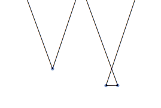
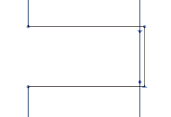

Use the Draw tool the add nodes. Simple click adds a line, click and drag adds a curve.
You can select and move nodes and paths like you are used to it.
Double click a path to select it.
If you move a off curve node with the mouse or the keyboard and hold down ⌥ (option), the angle is preserved.
If you move a smooth curve node with the mouse or the keyboard and hold down ⌥ (option), movement is constrained to the axis of the two offcurve point.
To break a path, click a node with the Draw Tool.
To join two open paths, move the end nodes on top of each other.
If only one smooth curve point is selected and you delete it (with ⌫) the appearance of the path is retained as much as possible.
if you delete a offcurve point, the segment is converted into a strait line.
Click the line segment while holding down ⌥.
Select one corner point, and select "Open Corner" from the context menu.
Select two point, and select "Reconnect Nodes" from the context menu.
